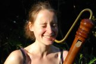
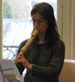
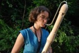
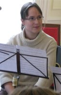
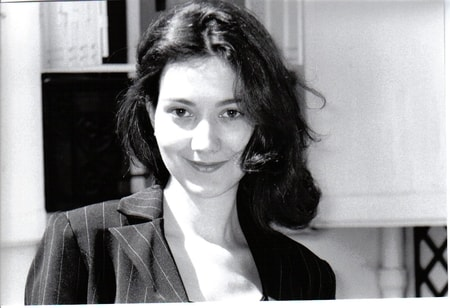
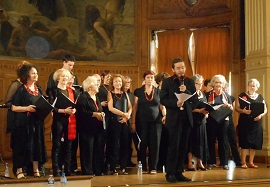

|
L'ensemble Les Baroqueurs du XVIIIème est constitué de cinq flûtistes à bec qui s'adonnent avec passion à l'interprétation du répertoire de la musique ancienne et contemporaine. Ces musiciens enthousiastes et dynamiques font partager leur amour pour la musique, chaque année, à travers un cycle de concerts, alternant œuvres connues du grand public (Vivaldi, Bach, Corelli, Haendel), œuvres de la Renaissance et œuvres du XXeme. Le jeu de cet ensemble défend avec éloquence un instrument souvent méconnu. |
 |
Virginie Massuet obtient son Diplôme d'études musicales de Musique ancienne avec des premiers prix de formation musicale en 1997, de flûte à bec en 2004, et de musique de chambre - mention très bien à l'unanimité - en 2006. Elle travaille aujourd'hui l'écriture musicale, arrangeant pour l'ensemble Les Baroqueurs du XVIIIème des concerti, sonates ou airs composés à l'origine pour d'autres formations instrumentales. |
|  | Sylvie Lannoy commence très tôt ses études musicales avec Françoise Defours et obtient en 2005 un prix de flûte à bec mention bien, et en 2006 un prix de musique de chambre mention très bien. Sa formation initiale lui permet d'aborder le répertoire Baroque, notamment avec Dominique Daigremont sous la direction duquel elle participa à l'orchestre Baroque de Nanterre, Les Goûts Réunis. |
 |
Originaire de la région parisienne, Diane Roussignol poursuit ses études musicales à Calais où elle étudie la flûte à bec avec Christine Vossart. Elle entre plus tard au Conservatoire national de région d'Aubervilliers-La Courneuve. Elle y travaille avec Françoise Defours et obtient sa médaille d'or de flûte à bec en 1998. Habituée à la pratique instrumentale, elle joue dans de nombreux orchestres de chambre et intègre, dès sa formation en 2005, l'ensemble Les Baroqueurs du XVIIIème. |
|  | Christine Pinel commence ses études musicales au Conservatoire national de région de Toulouse à l'âge de six ans. Elle obtient sa médaille de flûte à bec mention bien à l'unanimité en 2000, et son prix de musique de chambre mention très bien à l'unanimité en 2001. En parallèle, elle intègre le département de Musique ancienne du conservatoire, et joue pendant cinq ans dans l'orchestre Baroque - notamment sous la direction de Hervé Niquet - et les ensembles Renaissance. |
Flûtiste à bec et traversier, Jérémy Gerszanowilsz entre au Conservatoire national de région de Paris en 2003 et obtient son Diplôme d'études musicales de Musique ancienne en 2005, avec des premiers prix - mention très bien à l'unanimité - en flûte à bec, en musique de chambre et ornementation, et en formation musicale. Il se perfectionne ensuite auprès de Michèle Tellier et Françoise Defours. Titulaire du Diplôme d'état de professeur de flûte à bec, il enseigne actuellement sa discipline au Conservatoire national de région de Rueil-Malmaison. | |
|
Cinq flûtistes à bec mais pas seulement ! Les Baroqueurs du XVIIIème sont régulièrement accompagnés en concert par la chanteuse Soprano Laure Lalo ou la chorale Didl Dam. |
 |
Chanteuse Soprano, Laure Lalo débute ses études musicales à l'âge de huit ans à la Maîtrise de Radio France. Après l'obtention de son diplôme mention très bien, elle obtient en 2002 un premier prix de chant dans la classe de Musique ancienne du Conservatoire national de région de Paris, ainsi qu'un premier prix de formation musicale et de musique de chambre. Depuis, elle donne de nombreux concerts au sein d'ensembles vocaux tels que le choeur de chambre Accentus sous la direction de Laurence Equilbey, ou l'ensemble Musicatreize sous la direction de Roland Hayrabedian. |
 |
La Chorale Populaire Juive de Paris donne naissance en 1993 au choeur Mit a tam. En 2006, le choeur est accueilli par le Centre Medem et prend le nom de Didl Dam. Dirigée par Jérémy Gerszanowilsz, la chorale Didl Dam a pour vocation de redonner vie aux plus belles mélodies issues du répertoire populaire Yiddish. Elle interpète également des chants français, hébreux, judéo-espagnols ou anglais ayant un lien avec le monde et la culture Yiddish. |